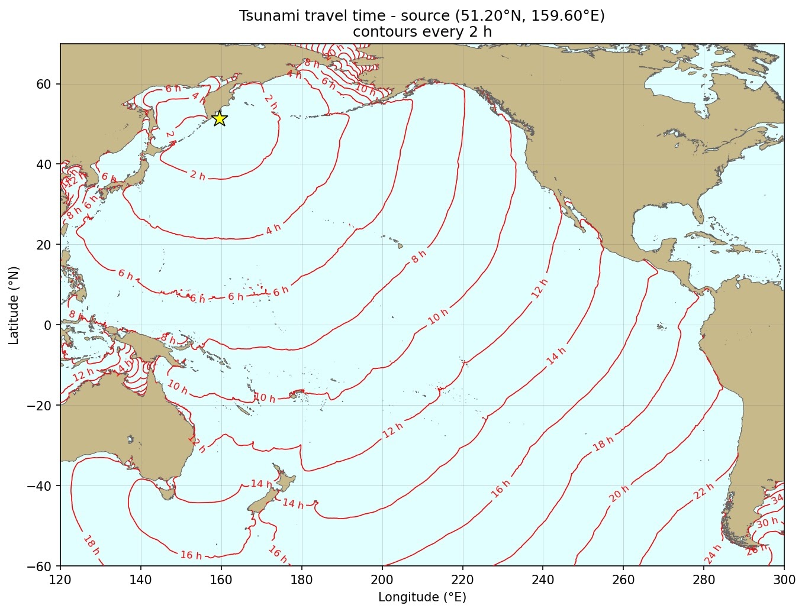
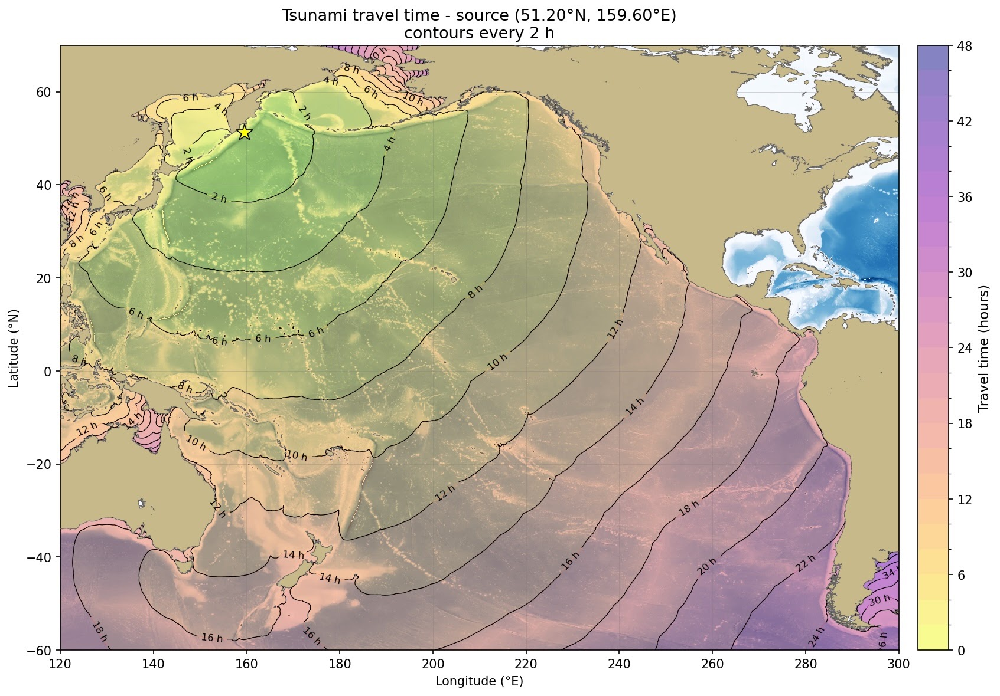
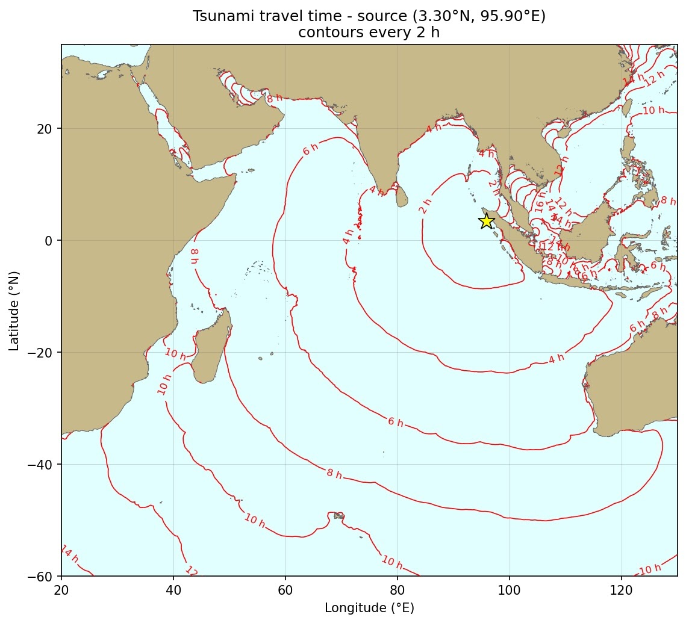
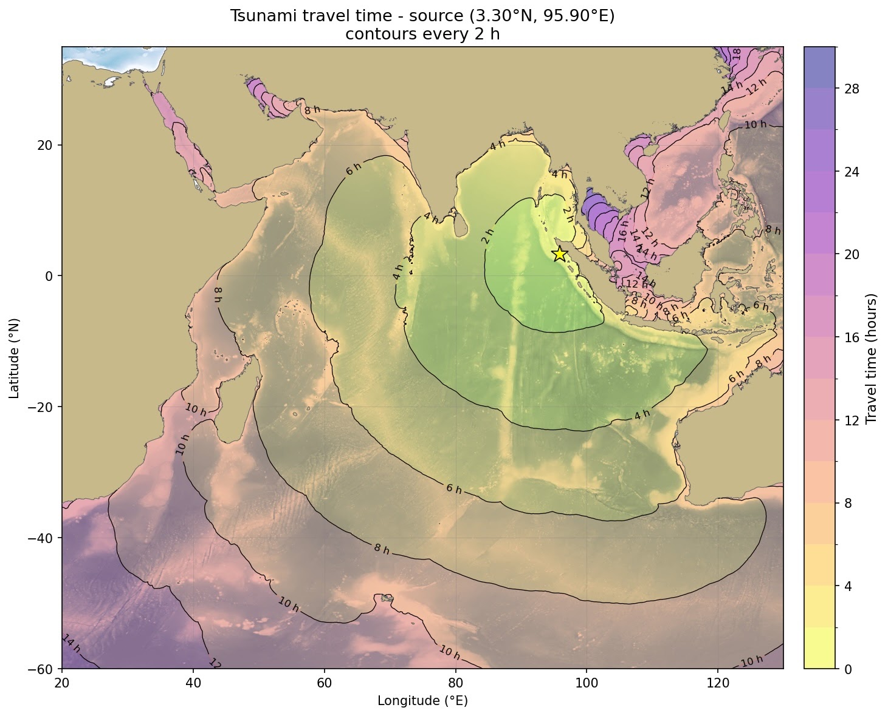

Software
Open-source code accompanying my research. Each entry below expands to a short description, the relevant references, and links to the repositories.
Tsunamis
Tsunamis are long-wavelength ocean waves generated by large-scale disturbances such as underwater earthquakes, volcanic eruptions, or landslides. Unlike ordinary wind-driven waves, which affect only the ocean surface, tsunamis involve the motion of the entire water column from the seabed to the surface. Because of this, they can travel across entire ocean basins with very little loss of energy. In the open ocean, a tsunami may pass almost unnoticed, with wave heights of less than a meter but wavelengths that can exceed hundreds of kilometers.
As a tsunami approaches shallower coastal waters, its behavior changes dramatically. The decreasing depth causes the wave to slow down while its height increases, often leading to powerful surges that can inundate coastal regions. This process, known as wave shoaling, concentrates the wave's energy and can produce devastating effects upon landfall. In some cases, the sea may first recede significantly before the arrival of the main wave, exposing the seabed and serving as a natural warning sign.
The prediction and analysis of tsunami propagation rely on mathematical models derived from the equations of fluid dynamics. In many practical applications, tsunamis are approximated as shallow-water waves, allowing their speed to be described in terms of the local ocean depth. This approximation enables the efficient computation of travel times and wavefront propagation across complex ocean basins. More advanced models incorporate dispersion and nonlinearity to capture finer details of wave evolution, particularly near coastlines.
Despite advances in modeling and monitoring, tsunami hazards remain difficult to predict with complete accuracy. Early warning systems combine seismic data, ocean buoys, and numerical simulations to estimate arrival times and potential impact. These systems play a crucial role in mitigating risk, but public awareness and preparedness are equally important in reducing the loss of life and property in vulnerable coastal regions.
Tsunami travel time describes how long it takes for a wave to propagate from its source to different locations across the ocean. This quantity is central to early warning systems, as it allows for rapid estimation of arrival times without resolving the full wave dynamics. Instead, one focuses on the motion of the leading wavefront, treating the ocean as a medium where wave speed depends on the local depth.
This propagation is governed by the eikonal equation, which relates the spatial
variation of travel time to the wave speed, typically approximated by the shallow-water
formula. In practice, this equation is solved numerically using efficient methods such
as the Fast Marching Method, implemented for example in the Python library
scikit-fmm. This approach makes it possible to compute tsunami arrival
times quickly and accurately over large, complex ocean basins, providing a practical
and widely used tool for large-scale tsunami modeling. An implementation for estimating
tsunami travel time can be downloaded from my
GitHub page. The pictures
below present the estimated tsunami travel times for the 2004 Indian Ocean tsunami
(Boxing Day tsunami) and the 2025 Kamchatka tsunami, and have been generated with the
previously mentioned Python code.




Complex-Step Newton method
The Complex-Step Newton Method is a numerical root-finding method that combines Newton iterations with complex-step derivative approximations. By avoiding the numerical cancellation errors that appear in finite-difference methods, the approach provides highly accurate derivative estimates and improved computational reliability. The complex-step iteration can be expressed as the equation or system of equations of the form:
where the product between the Jacobian matrix and the vector is approximated by the complex-step Jacobian approximation
for a small complex-step parameter \(h > 0\).
Therefore, the corresponding linear system can be solved using Krylov methods without forming the Jacobian but using instead this matrix-vector product approximation.
An important feature of the method is its convergence behavior. For systems of nonlinear equations, the method retains quadratic convergence even for relatively large values of the complex-step parameter. In the scalar case, the convergence is generally first order for finite values of the complex step, but approaches quadratic convergence as the complex-step parameter \(h\) tends to zero. In practice, this does not present a significant limitation, since the complex-step approximation remains numerically stable even for extremely small values of \(h\), unlike classical finite-difference methods which suffer from subtractive cancellation errors.
My work on this method includes theoretical analysis, numerical implementation, and the development of open-source software tools for scientific computing applications. The project is motivated by the broader goal of designing accurate and efficient numerical methods for nonlinear problems arising in applied mathematics and engineering.
An open-source implementation of the method has also been developed in C++ with a Python interface and can be accessed on PyPI and on GitHub.
References
- D. Mitsotakis, The complex-step Newton method and its convergence, Numerische Mathematik, 157 (2025), 993–1021, DOI:10.1007/s00211-025-01471-w (PDF) (Appendix)
- D. Mitsotakis, Computational Mathematics: An Introduction to Numerical Analysis and Scientific Computing with Python, Chapman and Hall/CRC, New York, 2023, DOI:10.1201/9781003287292